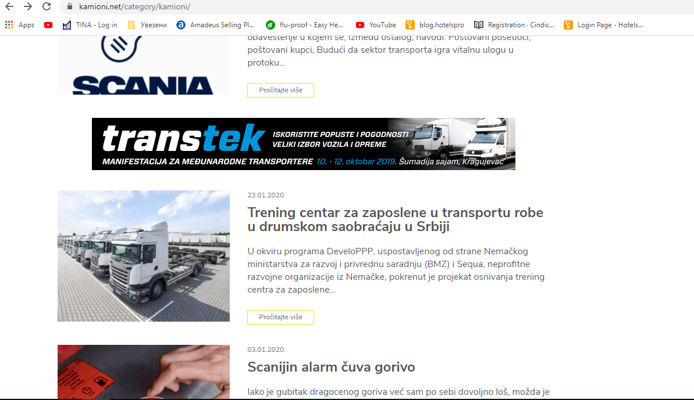
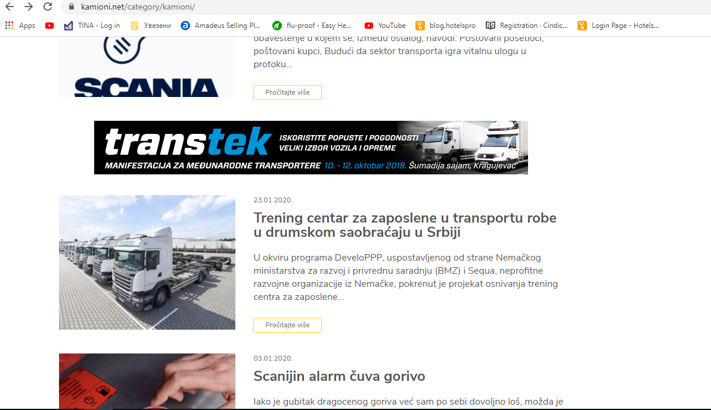
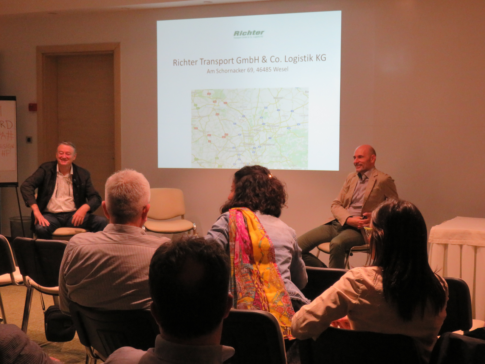
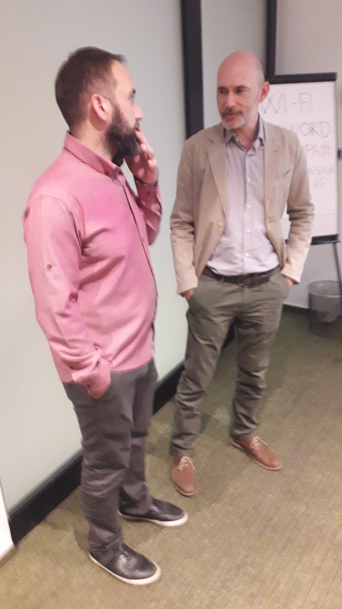
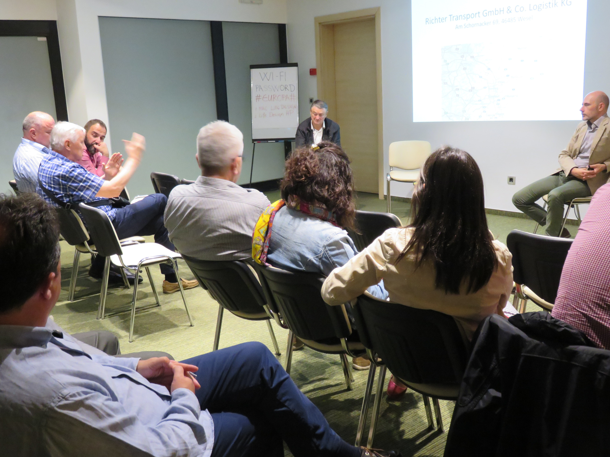
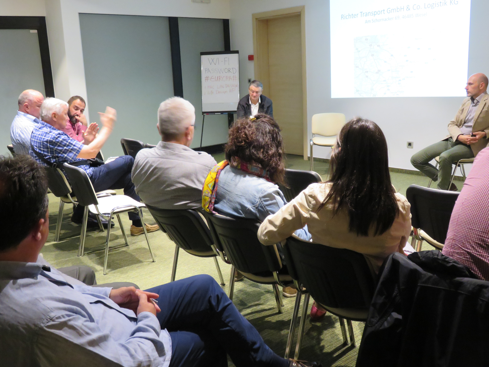

11/2020
DeveloPPP-Programm von Richter Transport als Coronahilfe
Als Teil der Programmaktivitäten im DeveloPPP-Vorhaben von Richter Transport für die Covid19-Pandemie-Vorbeugung wurden 1 500 Masken dem Seniorenclub im Belgrader Stadtteil Vracar überreicht. Dahinter stand auch das Rathaus aus Vracar, mit dem Ziel der Unterstützung der älteren Bevölkerung bei deren Bemühungen um die Erhaltung ihrer Gesundheit, die bzgl. Arbeit und Leben der gesamten Gemeinschafft gefährdet ist einschließlich der Maßnahmen und Rolle des DeveloPPP-Vorhabens.

Als Teil der Programmaktivitäten im DeveloPPP-Vorhaben von Richter Transport für die Covid19-Pandemie-Vorbeugung wurden 1500 Masken der Vereinigung der Berufsschulen des Transportwesens übergeben. Das ist eine gemeinnützige Organisation mit der Aufgabe, die Ziele der Berufsbildung im Transportwesen zu erreichen.
Die Schenkung wurde vom Präsidenten der Vereinigung entgegen genommen, Herrn Miroslav Macura, und soll der Unterstützung der Schüler und des Kollegiums der Schulen dieser Vereinigung dienen.

Innerhalb dieser Covid19-Maßnahmen wurden weitere 1 600 Masken an die Teams der serbischen Speditionen übergeben, die Mitglied im Transportverband MT bzw. Pumed sind.

14/06/2020
Medienpräsenz des develoPPP-Programms von Richter Transport
Maßnahmen des develoPPP-Vorhabens von Richter durch das gleichnamige Trainingszentrum in Belgrad wurden in den Medien der Transportwirtschaft kommuniziert.
Ende 2019 und während der Einrichtungsphase des Vorhabens in Belgrad wurde das Arbeitsprogramm in Veliki Tockovi veröffentlicht, einem lokalen Fachmagazin für Transport- und Baufahrzeuge, in Form des folgenden Artikels.
In 2020 wurden die Maßnahmen des Vorhabens in kamioni.net, veröffentlicht, einem virtuellen Fachmagazin für Straßen- und Baufahrzeuge.
 

Das develoPPP-Vorhaben von Richter Transport wurde in der Druckversion des Transportverbandes MT Pumed veröffentlicht, dem offiziellen Partner des Projekts.

06/05/2020
ANPASSUNG DES PROGRAMMS AN DIE UMSTÄNDE WÄHREND DER COVID-19 EPIDEMIE
Im Ausbildungszentrum Richter Transport wird an der Umstrukturierung des Trainingsplans für die Periode vom April bis Juli gearbeitet, nach den ersten Trainings gemäß Richtlinien des Projekts innerhalb des DeveloPPP-Programms des Bundesministeriums für wirtschaftliche Zusammenarbeit und Entwicklung -BMZ und Sequa, einer Non-Profit-Entwicklungsorganisation aus Deutschland und des Transportunternehmens Richter Transport. Aufgrund der Folgen des Ausbruchs der Covid-19-Krankheit und der Unmöglichkeit, klassische Vorträge, Trainings und Präsentationen in Anwesenheit der Teilnehmer zu organisieren, werden Standardschulungsformen vorübergehend durch Online-Präsentationen und -Vorlesungen ersetzt, die derzeit entworfen und vorbereitet werden. Da es sich hier um spezifische Vorlesungen mit professionellen Themen handelt und ein wesentlicher Schwerpunkt auf der praktischen Ausbildung liegt, werden Online-Präsentationen und -Vorträge an den theoretischen Teil des Lehrplans angepasst.
In Erwartung der baldigen Normalisierung der mit der Covid-19-Epidemie verbundenen Umstände, wird auf diese Weise die Tätigkeit des Ausbildungszentrums Richter Transport in Bezug auf die Organisation von Trainings und Präsentationen in der kommenden Zeit sichergestellt. Bisher wurden die Schulungen nach einem speziell erstellten Lehrplan durchgeführt, in dem die für Lkw-Fahrer bestimmten Themen vermittelt wurden - Swap-System /Wechselaufbausystem. Die Informationen über die Trainings für die kommende Periode, sowie über das DeveloPPP-Projekt, innerhalb dessen dieses Ausbildungszentrum gegründet wurde, finden Sie auf der Webseite des Ausbildungszentrums www.centarzaobuku.com Der Offizielle Mitarbeiter in Serbien ist die Geschäftsvereinigung für den Internationalen Transport.

03/02/2020
DIE ERSTEN TRAINIGS IM AUSBILDUNGSZENTRUM RICHTER TRANSPORT STATTGEFUNDEN
Im Ausbildungszentrum Richter Transport wurden die ersten Trainings durchgeführt, gemäß Richtlinien des DeveloPPP-Projekts des Bundesministeriums für wirtschaftliche Zusammenarbeit und Entwicklung -BMZ und Sequa - einer Non-Profit-Entwicklungsorganisation aus Deutschland, dessen Projektträger das deutsche Transportunternehmen Richter Transport ist.
Die ersten Trainings werden nach einem speziell vorbereiteten Unterrichtsplan durchgeführt, innerhalb dessen das Swap -System (Wechselaufbautransport) mit folgenden Themen unterrichtet wird:
- Technologie des Wechselaufbausystems im LKW-Transport (Swap-System) - theoretischer Unterricht und praktische Fahr- und Manövrierübungen, unter Rücksicht auf alle Besonderheiten des Swap-Systems.
- Sicherheit beim Fahren des Swap-Systems sowie die Grundsätze des sicheren Warentransports.
- Die Prinzipien der kombinierten Fahrzeuge, Luftbremsen sowie die Prozedur der Inspektion der Fahrzeuge, unter Rücksicht auf die Besonderheiten der Wechselaufbausysteme.
Im März wird ein regelmäßiger Trainingsplan erstellt, gemäß dem Unterrichtsplan für das Swap-System (Wechselaufbausystem), das innerhalb des ersten Plans bis Juli dauern wird. Vorgesehen ist, die Trainings in den Räumen des Ausbildungszentrums Richter Transport in Barič zu halten, aber auch bei den anderen interessierten Straßentransport-Unternehmen, für die internen Gruppen der Angestellten. Das Ausbildungszentrum wurde Ende des vorigen Jahres gegründet und ist vor allem für die Ausbildung von LKW-Fahrern, aber auch für die Schüler aus verwandten Gebieten bestimmt. Das Zentrum verfügt über die Lehr-, Präsentations- und Veranstaltungsräume für den Straßenverkehr sowie die Außenflächen für den praktischen Unterricht im Fahrzeug. Die Informationen über die Trainings für die kommende Periode, sowie über das DeveloPPP-Projekt, innerhalb dessen dieses Ausbildungszentrum gegründet wurde, finden Sie auf der Webseite des Ausbildungszentrums www.centarzaobuku.com
Das genannte Projekt wurde innerhalb des DeveloPPP-Programms des Bundesministeriums für wirtschaftliche Zusammenarbeit und Entwicklung -BMZ und Sequa - erstellt, einer Non-Profit-Entwicklungsorganisation aus Deutschland, und der Projektträger ist das deutsche Transportunternehmen Richter Transport. Der Offizielle Mitarbeiter in Serbien ist die Geschäftsvereinigung für den Internationalen Transport.

10/01/2020
DAS AUSBILDUNGSZENTRUM RICHTER TRANSPORT WIRD GEGRÜNDET
In Barič, einem Ort in der Nähe von Belgrad, wird das Ausbildungszentrum Richter Transport gegründet, das vor allem für die Ausbildung von LKW-Fahrern, aber auch für die Schüler aus verwandten Gebieten bestimmt ist. Eine der wichtigsten Lehrgebiete im Ausbildungszentrum wird die Ausbildung bezüglich der Technologie der Wechselaufbautransporte. Das Zentrum verfügt über die Lehr-, Präsentations- und Veranstaltungsräume für den Straßenverkehr sowie die Außenflächen für den praktischen Unterricht im Fahrzeug. Für die Bedürfnisse des Unterrichts im Ausbildungszentrum Richter Transport wird ein speziell vorbereiteter Unterrichtsplan hinsichtlich der neuen Technologie in Serbien - Swap -System (Wechselaufbausystem) mit folgenden Themen eingeführt:
- Technologie des Wechselaufbausystems im LKW-Transport (Swap-System) - theoretischer Unterricht und praktische Fahr- und Manövrierübungen, unter Rücksicht auf alle Besonderheiten des Swap-Systems.
- Sicherheit beim Fahren des Swap-Systems sowie die Grundsätze des sicheren Warentransports.
- Grundsätze der kombinierten Fahrzeuge
- Luftbremsen und die mit Swap-Systemen verbundenen Besonderheiten .
- Inspektion des Fahrzeugs, mit allen Besonderheiten der Wechselaufbaufahrzeuge.
Die Errichtung dieses Ausbildungszentrums, mit der Vision, das zentrale Ausbildungszentrum für das Wechselaufbausystem für den LKW-Transport sowie im Lande als auch im Region zu werden, gründet sich auf einem der Zeile dieses DeveloPPP-Projekts, nämlich die Kapazität des Fachunterrichts bezüglich des Warentransports im Straßenverkehr Serbiens zu erweitern, unter Mitarbeit von Lehrern aus Serbien und Deutschland und den Austausch von praktischen Erfahrungen.
Ein besonders wichtiger Aspekt des Projekts ist die Erweiterung der Kapazitäten und der Kenntnisse auf dem Gebiete des Warentransports im Serbien, durch Verbesserung und Weiterentwicklung der Berufsausbildung.
Das genannte Projekt wurde innerhalb des DeveloPPP-Programms des Bundesministeriums für wirtschaftliche Zusammenarbeit und Entwicklung -BMZ und Sequa - erstellt, einer Non-Profit-Entwicklungsorganisation aus Deutschland, und der Projektträger ist das deutsche Transportunternehmen Richter Transport. Der Offizielle Mitarbeiter in Serbien ist die Geschäftsvereinigung für den Internationalen Transport.

15/12/2019
Generalversammlung des serbischen Transportverbandes PUMED
Am Freitag, 13. Dezember 2019, begann die 19. Jährliche Hauptversammlung des serbischen Speditionsverbandes PUMED genannt MT zusammen mit der 16. LKW-Messe, beide traditionell in Belgrad veranstaltet. Eine große Anzahl von Teilnehmern aus Serbien und der Region, deren Geschäftspartner, Kollegen aus den Nachbarländern und Vertreter von Behörden und Staat fanden sich zusammen, um jüngste Trends der Transportwirtschaft zu diskutieren. Stellvertretend für die Unternehmung Richter Transport und das laufende develoPPP-Vorhaben nahm Darko Nikolic teil, um die Impulse des genannten Vorhabens für die Verbesserung von Wettbewerbsfähigkeit und Aus- und Weitbildung zu betonen.


10/12/2019
Studienreise nach Richter Transport in Wesel, NRW, Deutschland
In der ersten Dezemberwoche besuchte eine Studiendelegation Richter Transport in Wesel. Am Anfang stand ein Empfang auf dem Betriebshof, die Erläuterung der Struktur des Unternehmens und die Diskussion der Berufskraftfahrerausbildung in Deutschland. Ein spezifischer Teil der Studienreise der vierköpfigen serbischen Delegation war das Kennenlernen der nächtlichen Systemtransporte in Deutschland. Ein Treffen im Rahmen der Reise war der Besuch der deutschen Speditionsverbandes VVWL und seiner Mitglieder. Ein weiteres Meeting war der Fahrschule Schlißke aus der Gemeinschaft von Academy gewidmet und deren Arbeit bei der Berufskraftfahrerausbildung. Diese Schule arbeitet auch beim serbischen Curriculum aktiv fachlich mit.


20/10/2019
Projekt-Kickoff Präsentation und Diskussionstribüne
Letzte Tage fand die Vorstellung und die Gesprächsführung über ein neues Vorhaben statt. Das
Ziel dieses develoPPP-Vorhabens des deutschen Bundesministeriums für wirtschaftliche
Zusammenarbeit und Entwicklung und der sequa gGmbh, Bonn, in Serbien ist die
Kompetenzsteigerung für die Lehre und Bildungsstand in der serbischen Warenlogistik.
Das Weseler Unternehmen Richter Transport und das von diesem Unternehmen geleitete
Konsortium baut ein Qualifizierungszentrum für die Warenlogistik auf der Straße vor allem
dazu auf, um Standards der systemischen Verkehre einzuführen, die Kenntnis und Fertigkeiten
damit zu verbessern und damit auch die Aus- und Weiterbildung im ganzen Land.
Während eines guten Jahres wird ein neues Trainingszentrum in Belgrad aufgebaut, mit einem
Curriculum ausgestattet, mit Workshops zum Thema Systemtransporte und der Wirkung von
Nachtfahrten, mit der Organisation von Studienreisen, Pilotmaßnahmen und der Inspiration der
serbischen Lehre durch praktische Beispiele zwecks qualitativer Aufwertung dieser Lehre.
Nach der Projektdurchführung durch Richter Transport wird das Trainingszentrum CENTAR ZA
OBUKU seine gewerbliche Bildungstätigkeit und Marktpräsenz in Serbien und im Westbalkan
fortsetzen, die Berufsbildung heben, praktische Fertigkeiten vermitteln und neue
Technologien aus Deutschland in Serbien und der Region einführen.
Der strategische Partner in Serbien ist der Transport- bzw. Speditionsverband PUMED.


 


12/09/2019
DAS PROGRAM DEVELOPPP RICHTER TRANSPORT WIRD GEGRÜNDET
Innerhalb des vom Bundesministerium für wirtschaftliche Zusammenarbeit und Entwicklung gegründeten DeveloPPP-Programms - BMZ und Sequa - einer Non-Profit-Entwicklungsorganisation aus Deutschland, wurde das Projekt der Gründung des Ausbildungszentrums für den Warentransport im Straßenverkehr Serbiens gestartet. Der Projektträger ist das deutsche Transportunternehmen mit dem Ausbildungszentrun in Wesel, einer Stadt im Nordrhein-Westfalen.
Richter Transport, mit seinem deutschen Projektkonsortium, gründet das Ausbildungszentrum für den Warentransport im Straßenverkehr unter Einführung der deutschen Standards für den systematischen Transport sowie die Kapazitäts- und Kenntniserweiterung hinsichtlich des Warentransports in Serbien, durch Verbesserung und Weiterentwicklung der Berufsausbildung.
Das Ziel des Projekts ist die Erweiterung der Kapazität der Berufsausbildung auf dem Gebiete des Warentransports im Straßenverkehr Serbiens, die von den Lehrern aus Serbien und Deutschland, und mit dem Austausch von praktischen Erfahrungen, durchgeführt wird.
Das Projekt dauert ein Jahr und sieht die Gründung eines neuen Zentrums in Belgrad , Ausarbeitung der Unterrichtsprogramme, Durchführung von Workshops für den systematischen Transport und Einfluss der Nachtfahrt, Durchführung von Studienreisen, Probezeit am Anfang der Ausbildung und den Einfluss auf den Fachunterricht im Sinne von Qualitätsverbesserung durch positive Beispiele aus der Praxis. Der Offizielle Mitarbeiter in Serbien ist die Geschäftsvereinigung für den Internationalen Transport.